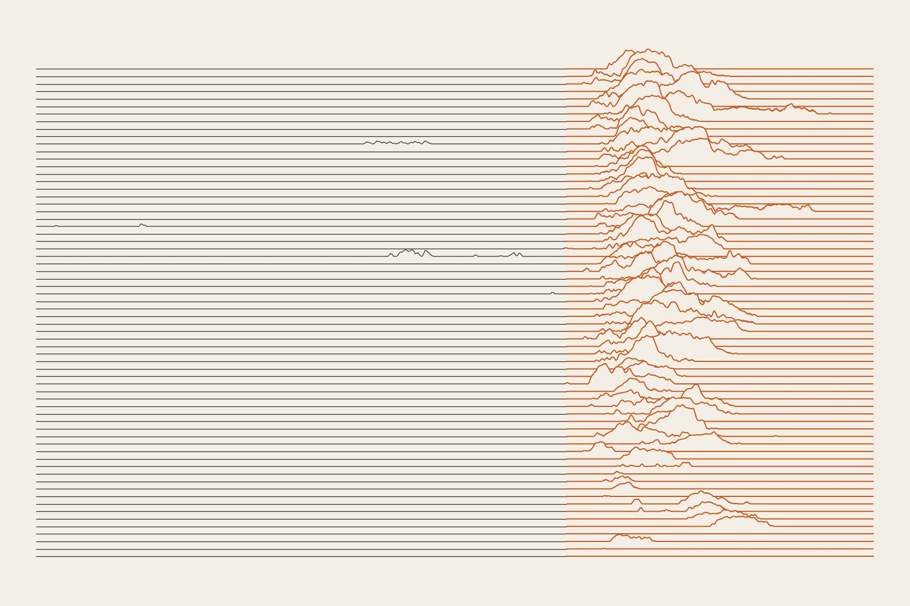
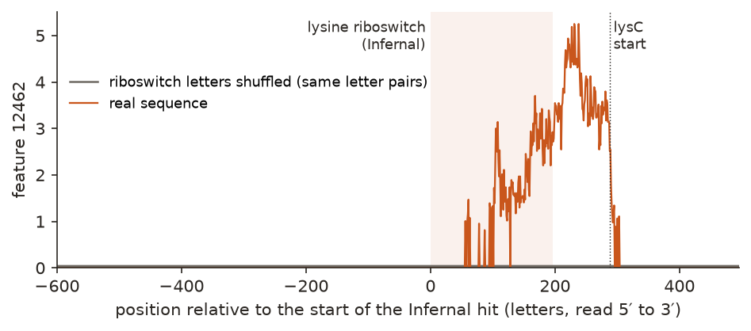
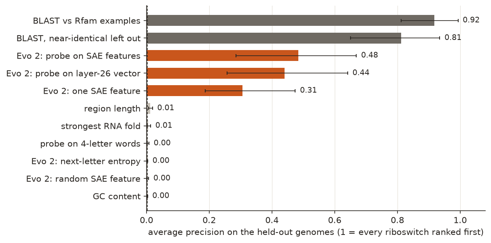
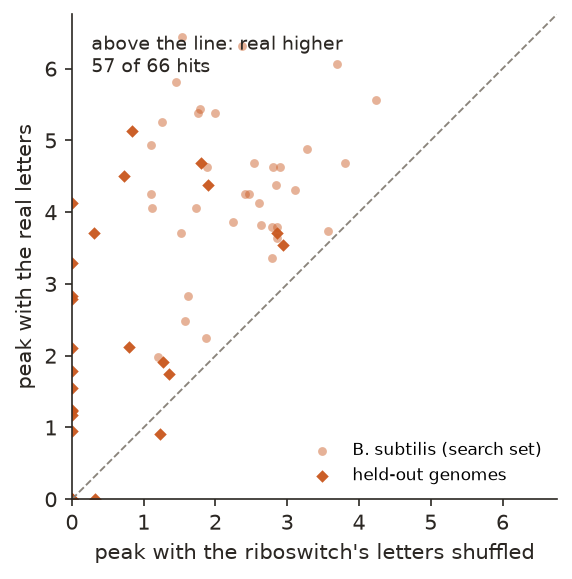
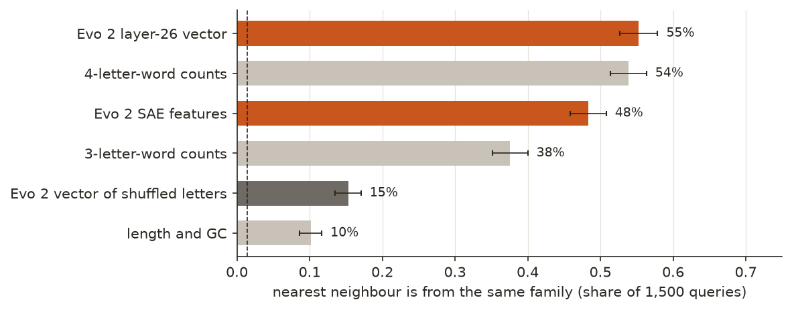

← Research·Experiments·
An Evo 2 feature finds riboswitches in new bacteria; a BLAST search finds more
Arc Institute’s COMPASS atlas used a genome language model to map the structured RNA hiding between bacterial genes. This note runs a small, checkable version on four lab bacteria: a single feature inside Evo 2, picked on one bacterium, finds riboswitches in three others far better than chance or simple rules. A plain BLAST search against known examples still finds more, and on “same family, different letters” the model does no better than counting four-letter words.

Summary: the short answer and the key results
In short
Does a genome language model know where the structured RNAs are in bacterial DNA?
Partly. Evo 2 7B read four bacterial chromosomes, and Goodfire’s sparse autoencoder split its layer-26 activity into 32,768 features. The feature that best marked riboswitches in Bacillus subtilis was then tested, unchanged, on the DNA between genes in E. coli, Lactococcus cremoris and Caulobacter crescentus. There, 31 of 12,746 strand-units hold a riboswitch (0.24%). The feature ranked them with an average precision of 0.31 [0.19, 0.47], where 500 random features scored a median of 0.003 and length, GC content, RNA folding and four-letter-word counts scored at most 0.012. A probe on all features reached 0.48 [0.29, 0.67]. BLAST against Rfam’s curated examples reached 0.92. Shuffling only the riboswitch’s letters, with the same letter pairs, lowered the feature in 57 of 66 riboswitches. But in a test of family members whose letters BLAST cannot match, Evo 2’s vectors grouped families no better than four-letter-word counts.
Key results
| What we tested | Result (held-out genomes unless stated) | Compared with |
|---|---|---|
| Does one SAE feature, chosen on B. subtilis, find riboswitches elsewhere? | Yes: average precision 0.31 [0.19, 0.47], AUROC 0.945; 13 riboswitch units in its top 31 | 500 random features: median 0.003, best 0.06 |
| Does a probe on all features do better? | 0.48 [0.29, 0.67]; 17 in its top 31 | Probe on the raw layer-26 vector: 0.44 |
| Do simple signals do as well? | No: length 0.012, strongest fold 0.006, four-letter-word probe 0.004, GC 0.003 | Evo 2’s own next-letter entropy: 0.003 |
| Does homology search beat it? | Yes: BLAST against Rfam’s seed examples 0.92 [0.81, 0.99]; 0.81 with near-identical seeds left out | Infernal, which defines the labels, is the ceiling |
| Does the feature read the letters, not just their make-up? | Yes: shuffling the riboswitch’s letters lowers its peak in 57 of 66 riboswitches, by 1.78 [1.46, 2.11] on average (3.29 to 1.51) | Same length, same letter pairs |
| Same family, different letters: do Evo 2’s vectors group families BLAST cannot link? | 55.3% [52.7, 57.9] of 1,500 nearest neighbours share the family | Four-letter-word counts 53.9%: difference +1.4 points [−1.9, +4.9]; chance 1.4% |
| Can a small LLM agent triage candidates? | On 30 known cases (Infernal hidden): “riboswitch” on 12 of 15 riboswitches, family right in all 12, and on 1 of 15 negatives; it calls 7 of the 15 negatives “other structured RNA” | Of 12 unannotated top hits it called one a riboswitch: E. coli mntP, a published manganese riboswitch |
01Introduction
In front of the E. coli gene lysC, which makes the first enzyme on the way to the amino acid lysine, sits a stretch of RNA about 200 letters long that folds into a pocket. When lysine is plentiful it sits in the pocket, the RNA changes shape, and the gene switches off. Nobody told Evo 2 any of this. Yet as the model reads the DNA one letter at a time, one of the features inside it stays at zero for the 1,500 letters before that pocket, rises as the pocket goes by, and peaks just before the gene starts. Shuffle only the pocket’s letters, keeping their pairs, and the feature stays at zero (Figure 1).
What is known. Most of a bacterial genome codes for proteins; the tenth between genes holds the switches, among them RNAs that fold into shapes. Finding new ones is hard because a family keeps its shape while its letters drift, so text search misses distant relatives. Evo 2 (Arc Institute; Nature 2026) is a language model trained on over 9 trillion letters of DNA, and Goodfire’s sparse autoencoders found features in it that track protein code, tRNAs and rRNAs, and viral DNA. In October 2026 Arc’s COMPASS preprint fine-tuned Evo 2 on 376 million prokaryotic intergenic regions, clustered them into 5.14 million groups, and had AI agents search the clusters for divergent riboswitches, ribozymes and other structured RNAs.
What is missing. An atlas that size cannot be checked by hand, and the preprint’s claims rest on many steps. The basic one is easy to test on a small scale: does the base model, with no fine-tuning, carry a signal for structured RNA that transfers to a genome it was not tuned on, and does that signal beat the simple rules and the old tools a biologist would try first?
In the DNA between genes of bacteria it was not tuned on, does an Evo 2 sparse-autoencoder feature find riboswitches better than simple signals, and as well as homology search?
What this note does. It encodes four whole genomes, picks features on one, tests them on three, and puts every number next to a baseline and a control. Its contributions:
- A measurement: one Evo 2 feature finds riboswitches in held-out genomes at over 100 times the base rate, and a probe on all features does better still.
- Two controls that the signal passes: random features of the same frequency, and shuffling a riboswitch’s letters in place.
- Two baselines that set its limits: BLAST against Rfam’s examples beats it, and on “same family, different letters” four-letter-word counts match it.
- A small triage agent, scored against Infernal on known cases before it is trusted with unknown ones, and the code to rerun all of it for about $5.
What would count as an answer. Set before scoring:
- Every choice (which feature, the probes’ settings, the sign of each baseline) is made on B. subtilis; the three other genomes are scored once.
- A feature counts only if it beats random features that fire as often, and the simple baselines (length, GC, folding, k-mers), with intervals.
- The signal must drop when the riboswitch’s letters are shuffled with their pairs kept, or it is reading composition, not sequence.
- The agent is scored against Infernal on known cases, with Infernal hidden from it, before its verdicts on new candidates are reported.
02Setup
2.1 Biology 101, for software engineers
No biology is needed to follow this note, but a little helps. Here is the minimum, with a programming analogy for each idea.
- A genome is a codebase in one file. Each bacterium here keeps its DNA in one circular string of 2.5 to 4.6 million letters, written in A, C, G and T. It is read in one direction, 5′ to 3′, and has two strands: the second is the first reversed and complemented (A↔T, C↔G), and genes sit on both.
- Genes are functions; most are protein code. About 90% of these genomes is genes. The cell copies a gene into RNA, a disposable working copy, and the ribosome translates that copy into a protein.
- Intergenic DNA is the config between functions. The 9% to 12% between genes holds the switches: where copying starts and stops, and short RNAs that regulate the gene after them. Much of it has no annotation, which is why it gets called dark matter.
- RNA folds like nested brackets. An RNA strand pairs with itself: G with C, A with U (RNA has U where DNA has T). A hairpin is a stretch that pairs with a later stretch, written in dot-bracket form like balanced parentheses:
GGGAAACCCfolds as(((...))). Section 2.2 works one by hand. - A riboswitch is an if-statement built from RNA. It sits in the 5′ untranslated region, the stretch of RNA before a gene’s protein code. One part (the aptamer) folds into a pocket that binds one small molecule, such as lysine or the vitamin B1 derivative TPP; binding refolds the next part, which switches the gene off or on. It works like a sensor reading wired to a feature flag, with no protein involved. Rfam lists 52 riboswitch families.
- Shape outlives letters. Evolution keeps the fold, not the text. If a G–C pair mutates to A–U, the letters differ at two places but the brackets are identical, so two members of one family can share less than half their letters. Grep-like search (BLAST) misses such relatives; a model that understood the fold would not.
- Rfam and Infernal are a grammar and its parser. Rfam is a curated catalogue of RNA families, each with hand-aligned example sequences (its seeds). Infernal turns each family into a covariance model, which scores letters and pairs together, much like a context-free grammar, and searches genomes with it. Each family has a gathering (GA) cutoff, the score above which a match counts. It is the standard answer key, used here as ground truth.
- A genome language model is autocomplete for DNA. Evo 2 was trained to predict the next letter of DNA from all domains of life. To do that well it must build internal notions of genes, reading frames and, perhaps, RNA shapes. It reads left to right, so at any letter it has only seen what came before.
- An SAE feature is one word in the model’s inner vocabulary. Inside the model each letter becomes a vector of 4,096 numbers. A sparse autoencoder rewrites that vector as a sum of a few of 32,768 learned directions, its features, so each letter lights up about 64 of them. A feature is like a log tag the model emits: some read “protein code”, some “tRNA”. Nobody labels them in advance; this note looks for one that reads “riboswitch”.
| Term | In one line |
|---|---|
| Intergenic region | A stretch of 50 or more letters between two protein, tRNA, rRNA or pseudo genes |
| Unit | One intergenic region plus 100 letters of each neighbouring gene, read on one strand; the thing each method scores |
| Riboswitch hit | An Infernal match, above the family’s GA cutoff, to an Rfam family of type “riboswitch” |
| Positive unit | A unit holding at least half of a riboswitch hit on its own strand |
| Feature | One of the 32,768 units of Goodfire’s sparse autoencoder on Evo 2 7B, layer 26 |
| Dinucleotide shuffle | A random reordering that keeps the length and the count of every letter pair (AA, AC, …): the make-up stays, the message goes |
2.2 Three hairpins, different letters, one shape
Pair letter 1 with letter 9, 2 with 8, 3 with 7; letters 4 to 6 form the loop.
| Sequence | Pairs (1–9, 2–8, 3–7) | Fold | Letters shared with the first |
|---|---|---|---|
GGGAAACCC | G–C, G–C, G–C | (((...))) | 9 of 9 |
GAGAAACUC | G–C, A–U, G–C | (((...))) | 7 of 9 |
GCAAAAUGC | G–C, C–G, A–U | (((...))) | 4 of 9 |
All three fold the same way, but the third shares only 4 of 9 letters with the first. Real riboswitches are 70 to 200 letters with several such stems, and members of one family differ in this way. That is the test in section 4.4: can Evo 2 group family members whose letters BLAST cannot match?
2.3 Four bacteria, one used for choosing
| Genome | Role | Length | Intergenic regions | Units with a riboswitch | Riboswitch families (Infernal) |
|---|---|---|---|---|---|
| Bacillus subtilis 168 (soil) | search set | 4.22 Mb | 2,343 | 36 of 4,686 | 14: TPP, FMN, SAM, lysine, purine, glycine, cobalamin, glmS, Mg, Mn, preQ1, c-di-AMP, guanidine-I, azaaromatic |
| Escherichia coli K-12 MG1655 (gut) | held out | 4.64 Mb | 2,525 | 10 of 5,050 | 7: TPP, FMN, lysine, cobalamin, Mg-II, molybdenum, guanidine-II |
| Lactococcus cremoris MG1363 (dairy starter) | held out | 2.53 Mb | 1,624 | 11 of 3,248 | 8: TPP, FMN, lysine, purine, Mg, fluoride, sodium, preQ1-II |
| Caulobacter crescentus NA1000 (freshwater, GC-rich) | held out | 4.04 Mb | 2,224 | 10 of 4,448 | 7: TPP, cobalamin, glycine, Mn, ZMP-ZTP, guanidine-II, nhaA-I |
The held-out genomes were picked to be far from B. subtilis and from each other: a gut bacterium, a lactic-acid bacterium and an alphaproteobacterium with 67% GC. None is a pathogen. Annotations are NCBI RefSeq; intergenic regions exclude protein, tRNA, rRNA and pseudo genes but keep annotated noncoding RNAs, which are part of what the search is for. Infernal 1.1.5 scanned every region (plus 100 letters each side) against all 4,227 Rfam 15.1 families at their GA cutoffs, with overlaps between related families resolved, as Rfam itself annotates genomes. It found 777 hits, 66 of them riboswitches; a hit near a region’s edge can fall in two neighbouring units, so 66 hits make 67 positive units.
2.4 What each method sees
| Method | Score for a unit | Learned from |
|---|---|---|
| One SAE feature | The feature’s highest value over the unit; the feature is the one with the best average precision on B. subtilis | B. subtilis labels, to choose 1 of 32,768 |
| SAE probe | Logistic regression on log(1 + highest value) of the 15,113 features that fire in 5 or more B. subtilis units | B. subtilis |
| Embedding probe | Logistic regression on the unit’s mean layer-26 vector (4,096 numbers) | B. subtilis |
| Random feature | 500 random features that fire in a similar number of held-out units (within a factor of two) | Nothing |
| Next-letter entropy | Evo 2’s mean uncertainty about the next letter over the unit (no SAE) | Sign only |
| Length, GC | The unit’s length; its share of G and C | Sign only |
| Strongest fold | The lowest folding energy of any 120-letter window (ViennaRNA), negated | Nothing |
| 4-mer probe | Logistic regression on the frequencies of the 256 four-letter words | B. subtilis |
| BLAST | Best blastn bit score against the 7,252 Rfam seed sequences of all 52 riboswitch families; a second version leaves out seeds 90% or more identical to the unit (its own sequence or a close relative’s, when Rfam’s examples contain them) | Rfam’s examples |
| Infernal | Defines the labels, so it scores 1 by construction: the bar, built from the same examples as BLAST plus their pairing structure | Rfam’s examples and structures |
Probes use L2-regularised logistic regression with balanced class weights; the strength is picked by five-fold cross-validated average precision on B. subtilis.
2.5 Scoring
- Average precision (AP) is the headline: rank all units by score and average the precision at each riboswitch unit’s rank. A random ranking scores the base rate, 0.0024; a perfect one scores 1. It suits a search where positives are 1 in 400.
- AUROC is the chance a random positive outranks a random negative. It is reported too, but with so few positives it flatters: a method can reach 0.83 (length does) with no positive near the top.
- Top 31: of the 31 best-scoring held-out units, how many hold a riboswitch (31 is the number of positives, so this is both precision and recall at that cut).
- Intervals are 95% percentile bootstraps over units (1,000 resamples). For the random-feature row, the interval is the 2.5th to 97.5th percentile over the 500 features.
03How the study was run
- Goal and design written first: Evo 2 7B with Goodfire’s layer-26 SAE, features chosen on B. subtilis, controls for composition and for chance, a triage agent checked against Infernal.
- Labels: intergenic regions of four genomes (8,716 regions) and Infernal’s scan of them against all of Rfam: 777 hits above the GA cutoffs, 66 of them riboswitches.
- Encode each chromosome on both strands with Evo 2 (31 million letters in 8,192-letter windows that overlap by 1,024), keeping the top 32 features at each of 6.5 million intergenic positions; plus 1,604 Rfam seed sequences and their shuffles, and the 66 riboswitch hits in their genome context, real and shuffled twice. About 33 minutes of H100 time.
- Choose on B. subtilis: rank every feature that fires in a positive unit by average precision; fit the probes.
- Score every method once on the 12,746 held-out units, with intervals; the random-feature control (500 features); the shuffle-in-place test (66 riboswitches).
- Family test: 1,500 nearest-neighbour queries over seed sequences, BLAST-linked neighbours excluded, six representations.
- Agent: 30 known cases with Infernal hidden, then the 12 top unannotated held-out units.
| Fixed before any scoring | Changed after reading results |
|---|---|
| The model, SAE and layer; B. subtilis as the search set; Infernal at GA cutoffs as the labels; the unit definition; average precision as the headline; the control and baseline list; the agent’s tools, prompt and check design | The plan had E. coli as the only held-out genome. Infernal found 9 riboswitches in it, too few for an interval, so L. cremoris and C. crescentus were added before any Evo 2 scoring. After the first scoring, a BLAST variant leaving out near-identical seeds was added, because Rfam’s examples include sequences from these bacteria or close relatives; the agent’s BLAST tool was given the same filter after a trial run showed it finding a positive’s own sequence |
Conditions: Evo 2 7B (evo2_7b_262k, bfloat16) on one NVIDIA H100 on Modal, $4.66 billed in all (including model loading and test runs); Infernal, BLAST, ViennaRNA and the scoring on an Apple-silicon laptop CPU (Infernal about 11 minutes, scoring about 10). The agent, gpt-5.4-mini, used 96k input and 13k output tokens: $0.13.
04Results
Six findings:
- 4.1 One feature, chosen on B. subtilis, finds riboswitches in three other bacteria.
- 4.2 Simple signals score near zero; BLAST against known examples scores highest.
- 4.3 Shuffling a riboswitch’s letters in place lowers the feature in 57 of 66 riboswitches.
- 4.4 Same family, different letters: Evo 2 matches four-letter-word counts, not more.
- 4.5 The feature marks structured gene leaders in general, and some of its “false” hits are real.
- 4.6 The agent agrees with Infernal on known riboswitches but over-calls structure.
4.1 One feature, chosen on B. subtilis, finds riboswitches in three other bacteria
Feature 12462, the best of 32,768 on B. subtilis (average precision 0.79 there), scores 0.31 [0.19, 0.47] on the 12,746 held-out units, 125 times the base rate of 0.0024, with an AUROC of 0.945 [0.888, 0.997]. Thirteen of its top 31 held-out units hold a riboswitch. None of 500 random features that fire as often comes close: their median is 0.003 and their best 0.06.

Figure 1 shows what a left-to-right reader does with a riboswitch. The feature is silent before it, flickers as the aptamer goes by, and is strongest after it, over the switching part and the stretch just before the gene. The model can only recognise the element once it has read most of it. In the shuffled version the letters after the riboswitch are real and unchanged, yet the feature stays silent there too: what it responds to is the riboswitch the model has just read.
A probe that weighs all features, fitted on B. subtilis, does better: 0.48 [0.29, 0.67], with 17 of its top 31 held-out units holding a riboswitch. A probe on the raw 4,096-number layer-26 vector reaches 0.44 [0.26, 0.64]. The intervals overlap, so the SAE adds readability (one named feature) rather than a measured gain over the raw vector. The ranking of features is not stable across genomes, though: the second-best feature on B. subtilis, 19705, scores 0.52 on the held-out genomes, better than the first, and some of the top 10 drop to near zero (features.csv). Choosing on one genome picks a good feature, not the best one.
4.2 Simple signals score near zero; BLAST against known examples scores highest
Length (0.012), strongest fold (0.006), the four-letter-word probe (0.004), GC content (0.003) and Evo 2’s own next-letter entropy (0.003) all sit near the base rate; none puts a riboswitch in its top 31. BLAST against Rfam’s riboswitch seed sequences scores 0.92 [0.81, 0.99], and 0.81 [0.65, 0.94] with seeds 90% or more identical to the unit left out. Figure 2 shows every method.

| Method | Average precision | 95% interval | AUROC | Top 31 | On B. subtilis (AP) |
|---|---|---|---|---|---|
| BLAST vs Rfam examples | 0.918 | [0.812, 0.993] | 0.968 | 28 | 0.973 |
| BLAST, near-identical left out | 0.811 | [0.651, 0.935] | 0.919 | 26 | 0.946 |
| SAE probe | 0.484 | [0.285, 0.669] | 0.958 | 17 | 1.000* |
| Embedding probe (layer 26) | 0.440 | [0.257, 0.642] | 0.957 | 16 | 1.000* |
| One SAE feature (12462) | 0.306 | [0.187, 0.474] | 0.945 | 13 | 0.794* |
| Region length | 0.012 | [0.007, 0.019] | 0.830 | 0 | 0.040 |
| Strongest RNA fold | 0.006 | [0.003, 0.013] | 0.616 | 0 | 0.032 |
| 4-mer probe | 0.004 | [0.002, 0.008] | 0.644 | 0 | 0.107* |
| Next-letter entropy (Evo 2) | 0.003 | [0.002, 0.004] | 0.518 | 0 | 0.013 |
| Random SAE feature (median of 500) | 0.003 | [0.002, 0.007] | 0.506 | n/a | n/a |
| GC content | 0.003 | [0.002, 0.004] | 0.514 | 0 | 0.010 |
* Chosen or fitted on B. subtilis, so that column is the search set’s own score, not a test.
The baselines settle the boring explanations. Riboswitch regions are longer than most (AUROC 0.83 for length alone), but length puts none in its top 31; they fold, but so does much of the DNA between genes; and four-letter-word frequencies, trained the same way as the probes, learn nothing that transfers. Whatever the feature reads is not size, composition or raw foldability.
BLAST wins because these are known families: Rfam’s seed alignments hold 7,252 examples of riboswitches, some from these bacteria or close relatives. Leaving out near-identical seeds costs BLAST 0.11, and it still leads. The fair reading: on families with many catalogued members, homology search beats the model; the model’s signal could matter where examples run out, which this test does not reach.
The pooled score hides spread across genomes. Feature 12462 scores 0.61 on E. coli, 0.76 on C. crescentus and 0.31 on L. cremoris, where many other structured leaders outrank its riboswitches (section 4.5). Pooling also mixes genomes whose feature values run on different scales.
4.3 Shuffling a riboswitch’s letters in place lowers the feature in 57 of 66 riboswitches
For each of the 66 riboswitch hits, Evo 2 read 1,500 letters before it, the hit and 300 after, once as is and twice with only the hit’s letters dinucleotide-shuffled. Feature 12462’s peak over the hit fell from 3.29 to 1.51 on average, a difference of 1.78 [1.46, 2.11], and was higher for the real letters in 57 of 66 (21 of 30 in the held-out genomes).

A shuffle keeps the length, the letter counts and every letter pair, so GC content, simple repeats and short-range composition are unchanged. The feature still drops: it is reading the order of the letters, at a longer range than pairs. The drop is weaker in the held-out genomes (21 of 30) than in B. subtilis (36 of 36), and 48 of the 66 shuffled hits still make the feature fire somewhat. Part of what it reads survives shuffling, possibly the flanking context.
4.4 Same family, different letters: Evo 2 matches four-letter-word counts, not more
Of 58,806 same-family pairs among 1,604 Rfam seed sequences (45 riboswitch families), 33,030 have no BLAST link at all. Restricted to those unlinked candidates, a sequence’s nearest neighbour by Evo 2’s mean layer-26 vector shares its family in 829 of 1,500 queries, 55.3% [52.7, 57.9], against 1.4% by chance. Four-letter-word counts reach 53.9% [51.3, 56.3]: the paired difference is +1.4 points [−1.9, +4.9]. The SAE features reach 48.3%, 5.5 points [2.1, 8.7] below four-letter words.

This is the test closest to COMPASS’s claim, that the model groups RNAs whose letters have drifted apart. On the base model, at this scale, the answer is no more than k-mers do. BLAST’s link test works on alignments, but family members still share short conserved motifs (the parts that touch the bound molecule), and four-letter-word counts catch those. Evo 2’s vector of the shuffled sequences falls to 15%, so its signal does need the letter order; it just carries no more family information than four-letter words do. Accuracy varies by family: cobalamin 40 of 40 and SAM 39 of 40, but the two c-di-GMP-II families 4 of 40 and 4 of 33.
Two caveats limit this. Each seed was read alone, without the genome around it that Evo 2 was trained on, and section 4.1 shows that context matters. And COMPASS fine-tuned the model on intergenic DNA before comparing; the base model was not trained for this comparison.
4.5 The feature marks structured gene leaders in general, and some of its “false” hits are real
Of feature 12462’s 50 top held-out units, 18 hold a riboswitch, 12 hold another Rfam RNA (11 of them cis-regulatory, such as the PyrR attenuator, T-boxes and ribosomal-protein leaders) and 20 hold no Rfam hit. The SAE probe’s top 50 split 18, 12 and 20 the same way.
So the feature is not a riboswitch detector. It marks structured regulatory RNA in front of genes. Many of its unannotated hits sit before genes that bacteria are known to regulate with RNA leaders: trpE and hisC (amino-acid attenuators), tRNA-synthetase genes such as serS and alaS (T-box territory in this lactic-acid bacterium) and pyrE. The precision numbers above count all of these as errors.
Some of the “errors” are riboswitches the labels missed. The SAE probe’s fifth-ranked held-out unit, and its top unit with no Rfam hit, sits in front of E. coli mntP, a manganese exporter. Infernal scores Rfam’s manganese (yybP-ykoY) model there at 41.6 bits, just under the family’s 45-bit cutoff (E = 1.7 × 10⁻¹³). Dambach et al. (Molecular Cell 2015) showed that this element is a manganese-responsive riboswitch. The probe’s second unannotated unit is in front of alx, the other E. coli gene the same paper names as carrying that riboswitch; Rfam’s model finds nothing there even at a permissive threshold. With labels that miss real riboswitches, every precision number in this note is a lower bound, and the labels favour BLAST most, since both draw on Rfam’s examples.
4.6 The agent agrees with Infernal on known riboswitches but over-calls structure
Given 15 known riboswitch units and 15 units with no Rfam hit from the held-out genomes, in a shuffled order and with its Infernal tool switched off, the agent (gpt-5.4-mini with five tools) called 12 of the 15 riboswitches “riboswitch”, naming Infernal’s family in all 12, and 1 of the 15 negatives. It called 7 of the negatives “other structured RNA” and 5 “unsure”.
The agent can look at the sequence, the neighbouring genes and which one sits downstream, a ViennaRNA fold with a z-score against 20 shuffles, a BLAST search of Rfam’s riboswitch seeds (near-identical seeds left out) and, outside the check, a permissive Infernal scan below the curated cutoffs. Its “riboswitch” verdict is trustworthy when it gives it: 12 of 13 such calls were right. Its weakness is the middle category: GC-rich DNA folds well, and the agent read strong folds as structured RNA in half the negatives despite a prompt that warned it.
On the 12 top-scoring held-out units with no Rfam hit (ranked by the SAE probe), it gave one “riboswitch” verdict, eight “other structured RNA”, two “unsure” and one “not a structured RNA”.
| Candidate | Agent’s verdict (confidence) | Its main evidence | What is known |
|---|---|---|---|
| E. coli, before mntP | riboswitch, manganese (0.78) | Downstream Mn²⁺ exporter; sub-cutoff manganese match (E = 4 × 10⁻¹⁰) | A manganese riboswitch (Dambach et al. 2015) |
| E. coli, before alx | other structured RNA (0.61) | Very strong fold (z = −9.6); weak BLAST hits | Also a manganese riboswitch (Dambach et al. 2015). The agent saw the Mn²⁺ exporter Alx downstream and still wrote that it had “no obvious metabolite-biosynthesis/import link” |
| L. cremoris, before a P-type ATPase (yoaB) | other structured RNA, “manganese riboswitch-like” (0.74) | BLAST to manganese seeds over 104 letters (E = 9 × 10⁻¹⁹) at under 90% identity; no Infernal hit at the cutoff | Not checked here: a hypothesis |
| C. crescentus, beside the RNase P RNA gene | other structured RNA, RNase P (0.93) | Permissive Infernal hit to bacterial RNase P RNA at the unit’s edge | The padding reaches into the RNase P RNA gene: an artefact of the unit definition |
The other eight verdicts are in agent_candidates.jsonl, with every tool call. The agent’s best moment was mntP. Its worst was alx: the evidence for the same conclusion was in front of it, and it reasoned past it. Unannotated candidates here are hypotheses for a lab to test, not discoveries.
05Compared with prior work
| COMPASS (Sun et al., bioRxiv 2026) | This note | |
|---|---|---|
| Model | Evo-PIN: Evo 2 fine-tuned on prokaryotic intergenic DNA | Evo 2 7B as released, no fine-tuning |
| Representation | Embeddings, clustered | Goodfire’s layer-26 SAE features and the layer-26 vector |
| Scale | 376 million regions from 1.3 Tb of genomes and metagenomes; 5.14 million clusters | 8,716 regions from four genomes |
| Structured RNAs recovered from sequence alone | ✓ (CRISPR, TIGR and VIPR arrays; bridge RNA variants; 20,149 putative structured-RNA clusters with a candidate protein partner) | ✓ for riboswitches in held-out genomes, below BLAST |
| Compared with homology search on the same task | Motivated by alignment-based clustering failing on this diversity | ✓: BLAST against Rfam’s examples wins on known families |
| Composition control (shuffled sequences) | Not described in the abstract | ✓ |
| AI agents | ✓ Teams of agents mine the database under researcher-set criteria; an MCP server is public | ✓ One small agent, scored against Infernal first |
The two are not the same experiment. This note tests whether the released base model already carries the signal, at a scale where every hit can be checked against Infernal; COMPASS fine-tuned the model and worked at a scale where nothing can be checked by hand. Its claims about divergent families fit a model trained for that; here the base model’s vectors did not beat four-letter words at it (section 4.4). The COMPASS statements here come from its bioRxiv abstract and the atlas’s About page; its full methods were not read.
06Implications for AI in biology
A feature inside a DNA language model, found with labels from one bacterium, finds a class of functional RNA in three others: interpretability on a biology model gives a usable detector, and one feature is enough to see it. But the detector is beaten by a 35-year-old tool when known examples exist, and its labelled “errors” are a mix of related RNAs and real riboswitches the labels missed. A claim that a model “discovers” elements needs both comparisons: against homology search, and against what the annotation missed. The same holds for agents. This one was right when it said “riboswitch”, generous with “structured”, and once argued past its own evidence; checking it on known cases first is what made its verdicts readable.
Risk: very low. The work is read-only analysis of public genomes of four non-pathogenic lab and food bacteria, with no sequence generation or design, and riboswitches are natural regulatory RNAs with no hazard of their own. Nothing here makes it easier to engineer an organism: the methods rank existing DNA.
The recommendation in one sentence: report a model’s RNA “discoveries” beside BLAST against the known examples, a letter-shuffle control and a check of what the annotation missed, before calling anything new.
07What this does not show
- Four genomes, 31 held-out riboswitch units. The intervals are wide (0.19 to 0.47 for the feature). One search genome is a small base for choosing among 32,768 features, and the second-best choice did better.
- Known families only. Every positive is in Rfam. Whether the feature finds families no one has catalogued, where BLAST has nothing to match, is the question that matters most, and it is not tested.
- The model has seen these genomes. Evo 2’s training data likely includes these bacteria (without any labels), so “held out” means held out from feature choice, not from pretraining.
- Labels with errors. Infernal at GA cutoffs misses some real riboswitches (mntP and alx in E. coli), and it counts T-boxes and attenuators as negatives. Precision is understated for all methods.
- One layer, one SAE, one model size. Layer 26 of Evo 2 7B and the one public SAE for it. Other layers, the 40B model and COMPASS’s fine-tuned model were not tried.
- Seeds read alone. The family test reads each 50-to-400-letter seed without genome context, which the model may need.
- No wet lab. The candidates are hypotheses. The agent was checked on 30 cases, a small sample, with Infernal hidden but BLAST available.
- No published feature label. Feature 12462 has no published label we could find, and none of the top 20 is among the features Arc’s SAE notebook plots.
08Reproduce it
Recompute every number and figure from the saved outputs, in about ten minutes on a laptop CPU (needs the Evo 2 outputs from step 4 in ~/.cache/steerlab/evo2-rna):
experiments/evo2-rna-atlas/reproduce.sh --scoresRerun from scratch: Infernal 1.1.5 and BLAST+ on the path, a Modal account for one H100 (about 35 minutes, about $4.70), and an OpenAI key for the agent (about $0.13):
experiments/evo2-rna-atlas/reproduce.sh --dry-run # lists every command
experiments/evo2-rna-atlas/reproduce.sh09What’s next
- Families BLAST cannot reach: hold out whole Rfam families from the BLAST database and from feature choice, and ask whether the feature still finds them.
- COMPASS’s fine-tuned model on the same four genomes and the same baselines, once its weights are public.
- Features chosen on several genomes, scored per genome rather than pooled.
10Questions and answers
Can a DNA language model find riboswitches?
Partly. One sparse-autoencoder feature of Evo 2 7B, chosen on B. subtilis, ranked riboswitches in three other bacteria with an average precision of 0.31, about 125 times chance; simple signals such as length, GC content and RNA folding scored near chance. BLAST against Rfam’s known examples did better, at 0.92.
What is a riboswitch?
A stretch of RNA in front of a bacterial gene that folds into a pocket for one small molecule, such as lysine or vitamin B1. When the molecule binds, the RNA changes shape and turns the gene on or off, with no protein involved.
What is COMPASS?
An atlas of structured sequences in prokaryotic intergenic DNA from Arc Institute (Sun et al., bioRxiv 2026). It fine-tuned Evo 2 on 376 million intergenic regions, clustered them into 5.14 million groups, and used AI agents to mine the clusters. This note tests the base model on a small, checkable scale.
Does Evo 2 recognise RNA families whose sequences differ?
Not beyond what letter counts capture, in this test. Among Rfam seed sequences BLAST cannot link, Evo 2’s vectors found a same-family nearest neighbour 55.3% of the time, and four-letter-word counts 53.9%; chance was 1.4%.
AAppendix: data
Every number comes from a file in results/; README.md describes every field.
regions.tsv,rfam_hits.tsv: the 8,716 intergenic regions and Infernal’s 777 hits in them.unit_baselines.tsv,units.tsv: every unit’s label and every method’s score.table.csv,features.csv,context.csv,families.csv: the tables behind sections 4.1 to 4.4.seed_set.json: the 1,604 Rfam seed sequences of the family test.agent_check.jsonl,agent_candidates.jsonl: every agent verdict, its reasoning and its tool calls.compute.json,summary.json: GPU time per job, and every number quoted here.
The agent’s instructions
The system prompt, in full, is in 8_agent.py: a careful bacterial RNA biologist; a strong fold alone is weak evidence; downstream metabolite genes are a classic clue; cite the tools; say “unsure” when the evidence is thin; answer with a JSON verdict (riboswitch, other structured RNA, not a structured RNA, or unsure), a family, a confidence and at most 120 words of reasoning. Up to eight model turns per unit.
Techniques
| Design | Features chosen on one genome, tested on three held-out genomes; Infernal at GA cutoffs as labels |
|---|---|
| Model | Evo 2 7B (evo2_7b_262k), layer-26 activations, Goodfire’s batch top-k SAE (32,768 features, k = 64) |
| Baselines | Length, GC, ViennaRNA folding, 4-mer probe, next-letter entropy, BLAST against Rfam seeds |
| Controls | 500 frequency-matched random features; in-place dinucleotide shuffles (Easel’s esl-shuffle -d); shuffled-sequence embeddings |
| Statistics | Average precision and AUROC; percentile bootstrap over units (1,000) and queries (2,000); paired differences for the family test |
| Agent | gpt-5.4-mini with tool calls, scored against Infernal on 30 known cases before 12 candidates |
Tech stack
| Data | NCBI RefSeq genomes and annotations; Rfam 15.1 covariance models and seed alignments |
|---|---|
| Analysis | Python, NumPy, SciPy, scikit-learn, matplotlib; Infernal 1.1.5, BLAST+ 2.17, ViennaRNA 2.8 |
| Models | Evo 2 (evo2 0.6.0, Vortex) in NVIDIA’s PyTorch 25.04 container; OpenAI API for the agent |
| Compute | One H100 on Modal, $4.66 billed; agent $0.13; the rest on a laptop CPU |
References
- Sun, Hudelmaier, Gilligan et al. (Hsu lab, Arc Institute). “Systematic mapping of the prokaryotic noncoding sequence space with a genomic language model.” bioRxiv, 2026. Atlas: compass.arcinstitute.org.
- Brixi et al. “Genome modelling and design across all domains of life with Evo 2.” Nature, 2026.
- Goodfire. “Interpreting Evo 2.” Blog post; SAE weights at huggingface.co/Goodfire/Evo-2-Layer-26-Mixed.
- Ontiveros-Palacios et al. “Rfam 15: RNA families database in 2025.” Nucleic Acids Research, 2025.
- Nawrocki and Eddy. “Infernal 1.1: 100-fold faster RNA homology searches.” Bioinformatics, 2013.
- Dambach et al. “The ubiquitous yybP-ykoY riboswitch is a manganese-responsive regulatory element.” Molecular Cell, 2015.
- Lorenz et al. “ViennaRNA Package 2.0.” Algorithms for Molecular Biology, 2011.
Revision history
- Nov 10, 2026: First published.
How to cite
@misc{lie2026evo2rnaatlas,
author = {Albert Lie},
title = {An Evo 2 feature finds riboswitches in new bacteria; a BLAST search finds more},
year = {2026},
month = nov,
url = {https://albertlieyingadrian.github.io/steerlab/experiments/evo2-rna-atlas/report/}
}